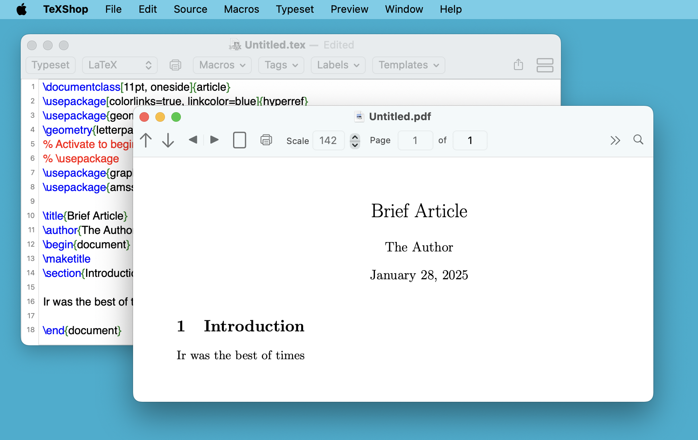

TeXShop (v 5.57) Release 10/03/2025
(for Intel and Arm, High Sierra through Tahoe)
TeXShop (v 4.79)
(for Sierra and above)
TeXShop (v 4.44)
(for Yosemite through Big Sur)
TeXShop (v 2.47)
(for Systems 10.4, 10.5, 10.6)
TeXShop was originally released on July 23, 2000.
Click here for more information.
Richard Koch
with contributions by Max Horn, Dirk Olmes, Mitsuhiro Shishikura, Seiji Zenitani,
Yusuke Terada, Martin Kerz, Isao Sonobe, and Many Others
TeX Live 2025 Release 03/08/2025
(Fully Universal for both Arm and Intel, Mojave through Tahoe)
TeX Users Group (TUG) and MacTeX TeXnical working group
